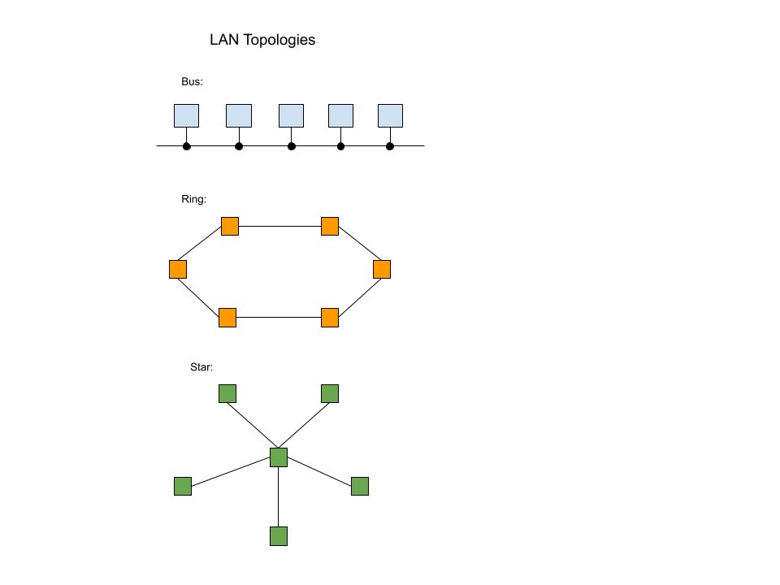

Chapter 7: Computer Networks & Cloud Computing
Student: Bryan Silva
|
Briefly describe or define: |
- Computer Network: A set of independent computer sytems connected together by telecommunication links for the purpose of sharing infomration and resources.
- Analog Device: Used to transmiting human voice and can vary continously in pitch and volume. For example: Vinyl Record Players or radios.
- Digital Device: A device that produces digital information in binary digits: 0s and 1s. For example: Computers or smartphones.
- Modem: A hardware device taht modulates, or alters, a standard analog signal called a carrier so that it encodes binary information.
- Bandwidth: This is the capacity for transmitting data, it is the rate in which infomration could be sent and received.
- Ethernet: A broadband technology that is most widley used. A Wired connection that allows you to connect computers in a local area network (LAN)
- WLAN: Short for Wireless Local Area Network, it transmits from computer to a local wireless base station to provide full internet access. The base statation, refered to a wireless router is then conneced to a traditional wired network like a DSL or cable modem.
- IEE 802.11 wireless network standard: This is another name for Wi-Fi, this is the standard for implementing wireless LAN
- MAN: Short for Metropolitan Area Network, used to provide interent access to all computers within a neighborhood or metropolitan area.
- Internet of Things: Meaning that the interenet is no longer a network of just computers and data, but it also a way to connect to everday use devices such as smart homes gadgets like a thermostat or house lights ect.
- LAN: Short for Local Area Network, connects hardware devcies such as computers, printers, and storage devices within close proximity. In example, the interconnection of machines in one room.
- Repeater: A device that simply amplifies and forwards a signal. When there are 2 ethernet LANs connected by a repeater, they function as if they are a single network.
- Bridge: A "smarter" device than a repeater that has knowledge about the nodes located on each separate network.
- WAN: Short for Wide Area Network, connects devices that are not within close proximity and connect accross a large geographical area.
- Packet and Packet Switching: Packet is a unit of transmission in a WAN and is an information block with a fixed maximum size and is transmitted through the network. Packet-switched is technoloy used by the WAN to deliver messages from one node to another.
- ISP: Internet Service Provider, is a business whose purpose is to provide access from a private network; such as a corperate or university network, to the internet.
- Firewall: Is a software or harware component that controls access from a network to a computer system, which protects it from unauthorzed access.
- Protocol: Is a mutually agreed upon set of rules, conventions, and agreements for the efficient and orderly exchange of information.
- Cloud Computing: A computing system in which the user can be completely unaware of where data is stored and where services are being provided. It is the delivery of computing services through servers, storage, and databases over the internet rather than on hardware.
- Net Neutrality: The concept that a public infomration network such as an Internet Servicde Provider or ISP should treat all users, all platforms, and all content equally.
|
Briefly descibe the five layers of TCP/IP (the Internet protocol hierarchy): |
- Layer 1. Physical layer: The goal of this layer is to create a "bit pipe" between two computers. This is the exchange of binary digits(bits) across a physical communication channel, such as a fiber-optic cable or wireless radio channel.
- Layer 2. Data link layer: The goal of this layer is to create an error-free "message pipe". The data link protocal addresses and solve two issues: error handling and framng.
- Layer 3. Network layer: The two main responsibilities of this layer is to create a universal addressing scheme for all network nodes, and delivering messages between any two nodes in the network. This layer is also known as the "glue" that holds the entire network together. The addressing scheme, in which two nodes use to identify each other is the IP address.
- Layer 4. Transport layer: This is a "special handling" service. This layer protocal creates a "program-to-program" delivery service and ensures that data is transfered reliably and without error between applications.
- Layer 5. Application layer: Involves the rules for implementing the end-user services provided by a network. Allows users to access network through protocols such as (HTTP) Hypertext Transer Protocol
|
List and briefly describe at least 3 network services and bnefits: |
- Email (Electronic Email): A fast and convient way to send messages whenever we want. Another form of this is also known as texting.
- Social Networking: Applications that allow social exchange through text, sound, graphics, vidoes, and imaging. Popular networks include Facebook and Youtube.
- Electronc Commerce: Also known as ecommerce, this service has allowed users to sell goods and services through the web.
|
Questions About IEE: |
- What does the acronym, IEEE, stand for?
Institute of Electrical and Electronics Engineers
- What is the mission and vision of IEEE?
Misson: IEEE's core purpose is to foster technological innovation and excellence for the benefit of humanity.
Vision: IEEE will be essential to the global technical community and to technical professionals everywhere, and be universally recognized for the contributions of technology and of technical professionals in improving global conditions.
- What are the benefits of IEEE membership?
Becoming a member allows you to get the connections, knowledge, and recognition to grow your career. Membership is also tailored to your needs depending on wether you join as a professional or a student.
Some benefits include:
- Career Resources
- Certifications in fields like software developement and engineering.
- Societies and Groups that give networking opportunites and a range of resouces.
- What are the requirements for IEEE student membership, and how much does undergraduate membership cost annually for students from the USA?
Students can qualify for up to 8 cumuulative years as a registered undergraduate or graduate student carrying at least 50 percent of a full-time academic program in an IEEE-designated field. Membership dues are annually and for an undergraduate in the USA is $32.00
|
LAN Topologies |
|  |
Sources |
- Gersting, Judith, and Michael Schneider. Invitation to Computer Science 8th edidion. Cengage Learning Inc. 2019
- Image Generated at https://leonardo.ai/
- IEEE Advanced Technology for Humanity at https://www.ieee.org/
|